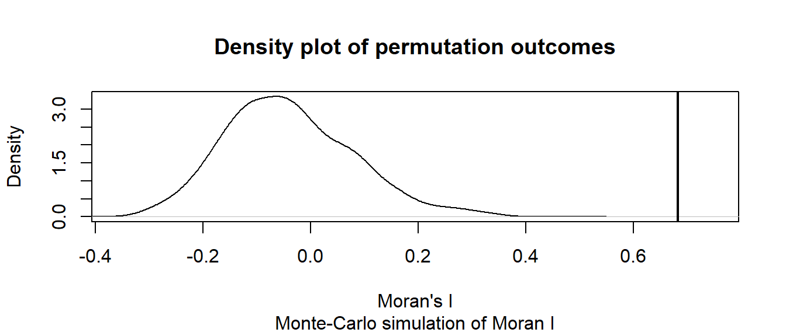
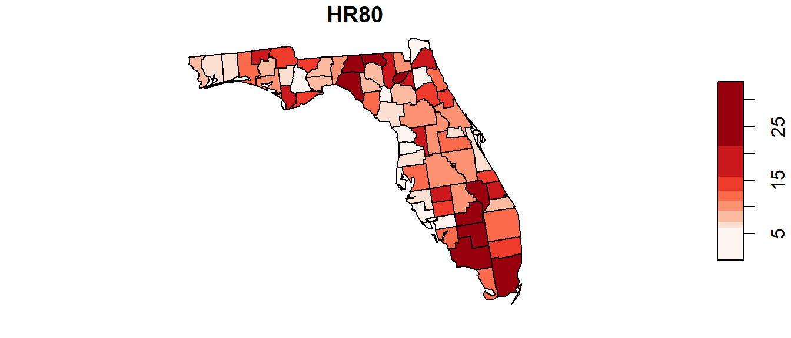
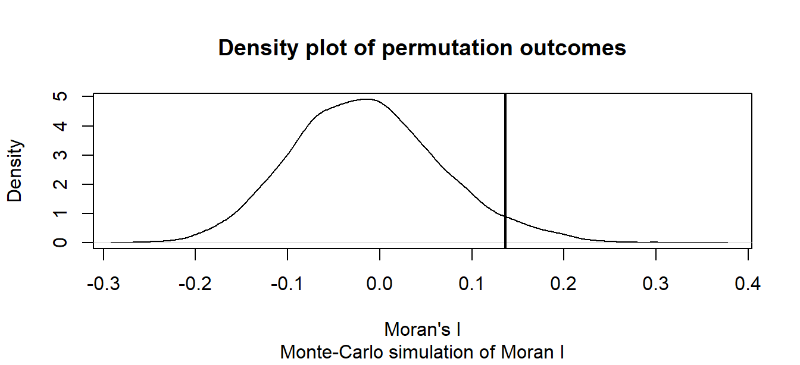

library(sf)
library(spdep)
library(RColorBrewer)Moran’s I analysis in R
Data for this tutorial can be downloaded from here. Make sure to unzip the files to a dedicated folder on your computer.
Don’t forget to set the R session to the project folder via Session >> Set Working Directory >> Choose Directory.
We will make use of the following packages: sf for importing the shapefiles, tmap for creating choropleth maps and spdep for implementing the Moran’s I analysis. Note that you will probably need to install spdep since this package has not been used thus far in class.
The functions in spdep use spatial formats that differ from those used with spatstat. As such, we will no longer need to rely on calls to as.owin(s) and as.ppp(s) as was the case with the spatstat functions.
Loading the data
Don’t forget to set the session’s working directory to the folder that contains the NHME.shp shapefile before running the following chunks of code.
s <- st_read("NHME.shp")Note that unlike the earlier point pattern analysis exercises, we will need to keep the attribute information with our spatial objects.
To list the column names associated with the object’s attribute table, type:
names(s)[1] "NAME" "STATE_NAME" "POP10_SQMI" "AVE_HH_SZ" "AVE_FAM_SZ"
[6] "Income" "House_year" "geometry" To list the contents of an attribute, affix the dollar sign $ to the object name followed by the attribute name. For example, to list the income values, type:
s$Income [1] 45765 59560 46559 50515 50027 40695 55046 43484 56701 60782 52393 56139
[13] 55045 70906 65226 79368 59580 56851 37378 41665 45747 44543 37110 39792
[25] 38239 42407You can plot the attribute values as follows:
hist(s$Income, main=NULL)or,
boxplot(s$Income, horizontal = TRUE)To generate a map by symbolizing the polygons using the Income attribute we will define the classification breaks (breaks = quantile with n = 8 breaks) and the symbol colors (palette="Greens"). For the latter, the tmap package makes use of Cynthia Brewer’s color schemes (you are already familiar with her website).
color <- brewer.pal(8, "Greens")
plot(s["Income"], key.pos = 4, nbreaks = 8, breaks = "quantile", pal = color)You can change the classification schemes by setting the breaks parameter to styles such as "equal", "jenks" (ArcGIS’ default), "sd", "pretty" to name a few.
You can change the Brewer color palette to any one of the following sequential color schemes:
display.brewer.all(type = "seq")
Moran’s I analysis
Step 1: Define neighboring polygons
The first step in a Moran’s I analysis requires that we define “neighboring” polygons. This could refer to contiguous polygons, polygons within a certain distance, or it could be non-spatial in nature and defined by social, political or cultural “neighbors”.
Here, we’ll adopt a contiguous neighbor definition. We’ll accept any contiguous polygons that share at least one vertex; this is the “queen” case (if one chooses to adopt the chess analogy) and it’s parameterized as queen = TRUE in the call to poly2nb. If we required that just edges be shared between polygons then we would set queen = FALSE (the rook case).
nb <- poly2nb(s, queen=TRUE)For each polygon in our shape object, nb lists all neighboring polygons. For example, to see the neighbors (by ID number) for the first polygon in the shape object, type:
nb[1][[1]]
[1] 2 3 6 7 20Here’s the list of county names and associated IDs:
| County | ID |
|---|---|
| Androscoggin | 1 |
| Cumberland | 2 |
| Kennebec | 3 |
| Knox | 4 |
| Lincoln | 5 |
| Oxford | 6 |
| Sagadahoc | 7 |
| Waldo | 8 |
| York | 9 |
| Belknap | 10 |
| Carroll | 11 |
| Cheshire | 12 |
| Grafton | 13 |
| Hillsborough | 14 |
| Merrimack | 15 |
| Rockingham | 16 |
| Strafford | 17 |
| Sullivan | 18 |
| Aroostook | 19 |
| Franklin | 20 |
| Hancock | 21 |
| Penobscot | 22 |
| Piscataquis | 23 |
| Somerset | 24 |
| Washington | 25 |
| Coos | 26 |
Step 2: Assign weights to the neighbors
Next, we need to assign weights to each neighboring polygon. In this example, each neighboring polygon will be assigned equal weight when computing the neighboring mean income values.
lw <- nb2listw(nb, style="W", zero.policy=TRUE)To see the weight of the first polygon’s neighbors type:
lw$weights[1][[1]]
[1] 0.2 0.2 0.2 0.2 0.2These are the weights each neighboring income value will be multiplied by before being summed. If a polygon has 5 neighbors, each neighbor will have a weight of 1/5 or 0.2. This weight will then be used to compute the mean neighbor values as in 0.2(neighbor1) + 0.2(neighbor2) + 0.2(neighbor3) + 0.2(neighbor4) + 0.2(neighbor5). This is equivalent to summing all five income values then dividing by 5.
Step 3: Compute the (weighted) neighbor mean income values (optional step)
NOTE: This step does not need to be performed when running the moran or moran.test functions outlined in Steps 4 and 5. This step is only needed if you wish to generate a scatter plot between the income values and their lagged counterpart.
Next, we’ll have R compute the average neighbor income value for each polygon. These values are often referred to as spatially lagged values.
inc.lag <- lag.listw(lw, s$Income)
inc.lag [1] 48705.00 49551.75 45963.17 46755.50 48901.00 49748.50 50477.75 46197.17
[9] 53057.00 58061.00 52535.00 63878.50 55531.80 64396.00 63755.33 65237.33
[17] 62894.00 61829.00 39921.00 43202.75 42088.67 40291.67 40571.00 41789.83
[25] 42556.00 49377.67You can plot the relationship between income and its spatially lagged counterpart as follows (note that the blue line added to the plot is derived from a regression model).
plot(inc.lag ~ s$Income, pch=16, asp=1)
abline(lm(inc.lag ~ s$Income), col="blue")Step 4: Computing the Moran’s I statistic
The Moran’s I statistic can be computed using the moran function.
I <- moran(s$Income, lw, length(nb), Szero(lw))[1]
I$I
[1] 0.6827955Recall that the Moran’s I value is the slope of the line that best fits the relationship between neighboring income values and each polygon’s income in the dataset.
Step 5: Performing a hypothesis test
The hypothesis we are testing states that “the income values are randomly distributed across counties following a completely random process”. There are two methods to testing this hypothesis: an analytical method and a Monte Carlo method. We’ll explore both approaches in the following example.
Analytical method
To run the Moran’s I analysis using the analytical method, use the moran.test function.
moran.test(s$Income,lw, alternative="greater")
Moran I test under randomisation
data: s$Income
weights: lw
Moran I statistic standard deviate = 5.8525, p-value = 2.421e-09
alternative hypothesis: greater
sample estimates:
Moran I statistic Expectation Variance
0.68279551 -0.04000000 0.01525284 The Moran’s I statistic is 0.683 (same value that was computed using the moran function as expected). The p-value is very small. Usually, when the p-value is very small it’s common practice to report it as < 0.001.
Note that ArcGIS adopts this analytical approach to hypothesis testing however, it implements a two-sided test as opposed to the one-sided test adopted in the above example (i.e. alternative = "greater"). A two-sided p-value is nothing more than twice the one-sided p-value. Unfortunately, ArcGIS does not seem to make this important distinction in any of its documentation. This distinction can have important ramifications as shown in the next example (Florida crime data). The Maine income data is so strongly clustered that both a one-sided and two-sided test produce the same outcome (a p-value close to 0).
Monte Carlo method
The analytical approach to the Moran’s I analysis benefits from being fast. But it may be sensitive to irregularly distributed polygons. A safer approach to hypothesis testing is to run an MC simulation using the moran.mc function. The number of simulations is defined by the nsim = parameter. Here, we’ll permute income values 999 times.
The moran.mc function takes another parameter called alternative =. This parameter has three possible values: "greater" (the default), "less", and "two.sided". The choice will be dictated by the side of the distribution we want to compute the p-value for. If our observed Moran’s I is to the right of the expected distribution, we will want to adopt the "greater" option which will focus on the upper tail of the distribution. If our observed value is to the left of the distribution, we will want to choose the "less" option to focus on the lower tail of the distribution. You can usually tell from the computed Moran’s I value which tail you will want to emphasize by its sign. A general rule of thumb is to place emphasis on the lower tail if Moran’s I value is negative, and to place emphasis on the upper tail if Moran’s I value is positive. In our example, out Moran’s I value of 0.68 is positive so we’ll choose "greater" for the parameter.
MC<- moran.mc(s$Income, lw, nsim = 999, alternative = "greater")
# View results (including p-value)
MC
Monte-Carlo simulation of Moran I
data: s$Income
weights: lw
number of simulations + 1: 1000
statistic = 0.6828, observed rank = 1000, p-value = 0.001
alternative hypothesis: greaterThe MC simulation generates a very small p-value, 0.001. This is not surprising given that the income values are strongly clustered. We can see the results graphically by passing the Moran’s I model to the plot function:
# Plot the Null distribution (note that this is a density plot instead of a histogram)
plot(MC)
The curve shows the distribution of Moran I values we could expect had the incomes been randomly distributed across the counties. Note that our observed statistic, 0.683, falls way to the right of the distribution suggesting that the income values are clustered (a positive Moran’s I value suggests clustering whereas a negative Moran’s I value suggests dispersion).
Can you tell the difference between our observed income distribution and those generated from a completely random process in the following figure?
The map on the left is our observed distribution. The three maps on the right are realizations of a completely random process.
Another example: Florida 1980 Homicide rate example
In this example, we explore the spatial distribution of 1980 homicide rates HR80 by county for the state of Florida using the Monte Carlo approach. The data are found in the NAT/ folder used in the in-class exercise.

The following code chunk highlights the entire workflow (don’t forget to set your R session folder to that which houses the FL.shp file).
# Load the shapefile
s <- st_read("FL.shp")
# Define the neighbors (use queen case)
nb <- poly2nb(s, queen=TRUE)
# Compute the neighboring average homicide rates
lw <- nb2listw(nb, style="W", zero.policy=TRUE)
# Run the MC simulation version of the Moran's I test
M1 <- moran.mc(s$HR80, lw, nsim=9999, alternative = "greater")
# Plot the results
plot(M1)
# Display the resulting statistics
M1
Monte-Carlo simulation of Moran I
data: s$HR80
weights: lw
number of simulations + 1: 10000
statistic = 0.13628, observed rank = 9575, p-value = 0.0425
alternative hypothesis: greaterThe MC simulation generated a p-value of ~0.04 suggesting that there would be a ~4% chance of being wrong in rejecting the null hypothesis or that there is a ~4% chance that our observed pattern is consistent with a random process (note that your simulated p-value may differ from the one shown here–the number of simulations may need to be increased to reach a more stable convergence). Recall that this is a one-sided test. ArcGIS’s analytical solution adopts a two-sided test. To compare its p-value to ours, we need to divide its p-value by 2 (i.e. 0.0588 / 2) which gives us a one-sided p-value of 0.0294–about 25% smaller than our simulated p-value.
The wording adopted by ArcGIS under the infographic (highlighted in yellow in the above figure) is unfortunate. It seems to suggest a one-sided test by explicitly describing the nature of the pattern (i.e. clustered). A more appropriate statement would have been “There is less than a 6% likelihood that the observed pattern could be the result of random chance” (note the omission of the word clustered).